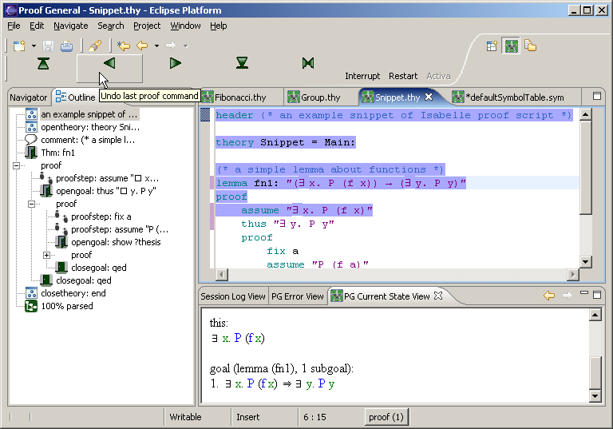
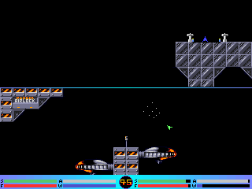
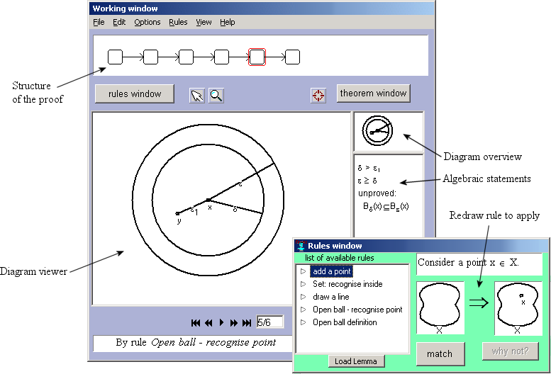

home /
Daniel Winterstein: Demos and Example Code
My CV can be found in .pdf format here.
Below are a list of projects I have worked on for which either demos or source code are avilable.
|  |
Proof General / Eclipse A year long project developing a sophisticated IDE for working with theorem provers (an A.I. technology used in chip design and verification). This is an open source project, and the code is freely available. You can examine code, or browse the JavaDoc (which is available online) for examples of my coding style. Please see the project website for details: Proof General / Eclipse wiki. |
|  |
G-Force A shareware game where small asteroids-style spaceships chase each other around various arenas. Written in C/assembly code 10 years ago on my first PC and distributed by magazine. Features gorgeous 256 colour, 320x200 VGA graphics! You can download it here: gforce.zip. |

|
HMM-Bach An A.I. demo produced for the Museum of Scotland's Science Festival. This runs on Linux and has a lot of dependencies, so it isn't really suitable for distributing. There is however a (rather hurried) web-port online at: http://www.anc.inf.ed.ac.uk/demos/hmmbach. |
|  |
Dr.Doodle A prototype application built as part of my Ph.D. This demonstrates using a visual logic in higher mathematics (specifically, the abstract geometry subject of metric-space analysis). A windows installer is available: Dr.Doodle installer. The Ph.D. itself (which is currently being considered for a BCS Distinguished Dissertation Award) is also available on request. |
© Daniel Winterstein 1998-2008
This is a personal
site. For Daniel's
business activities,
please see:
Winterwell.